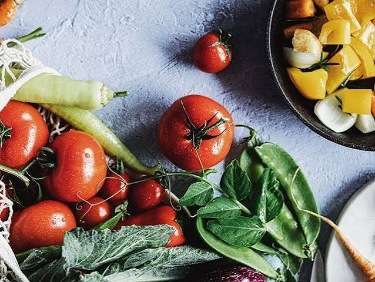

s, vegetables are the edible parts of plants consumed by humans as part of a savory meal or side dish. Unlike fruits, which develop from the ovary of a flower and contain seeds, vegetables encompass a wide variety of plant structures including leaves, stems, roots, tubers, and flower buds.